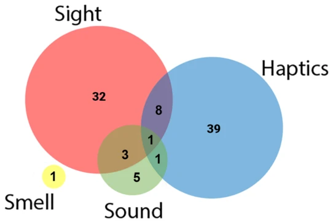
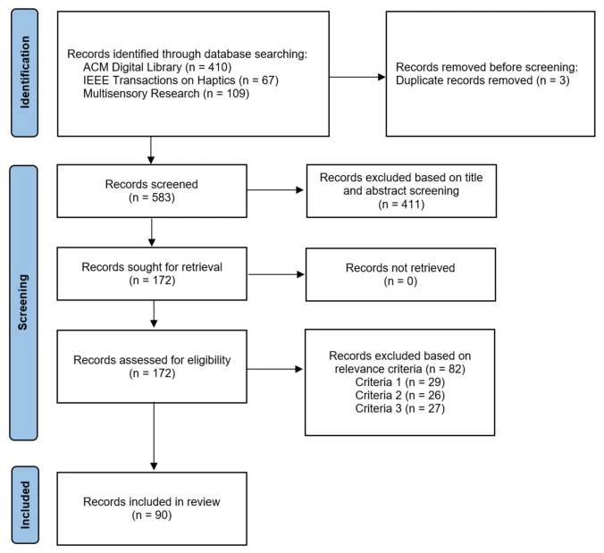
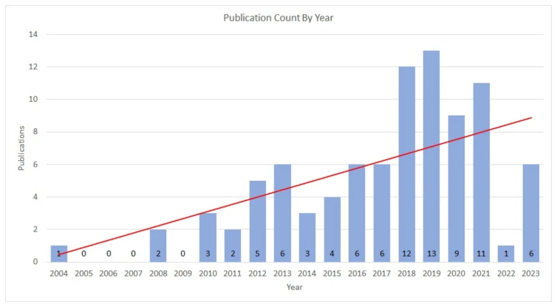
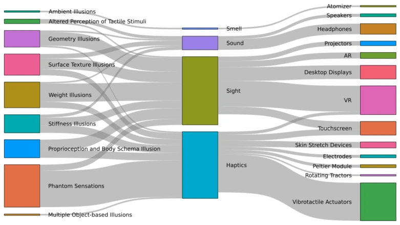
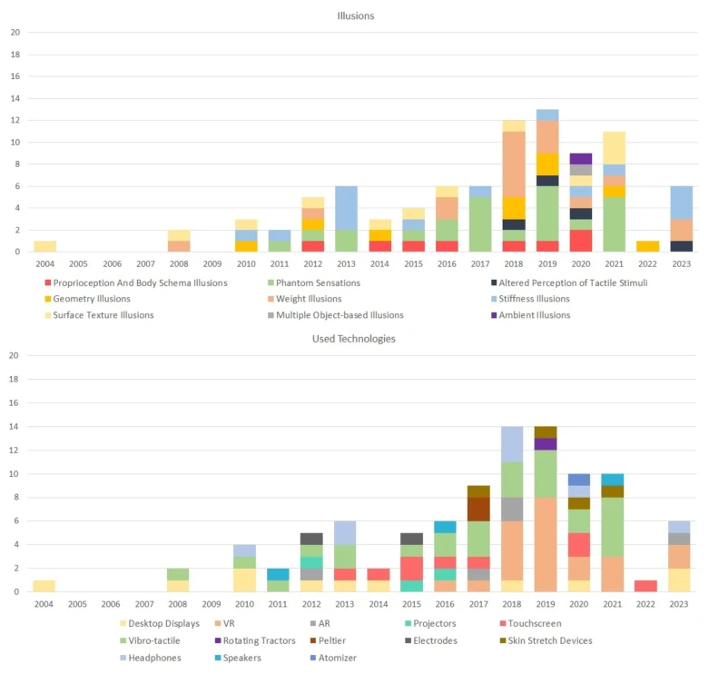
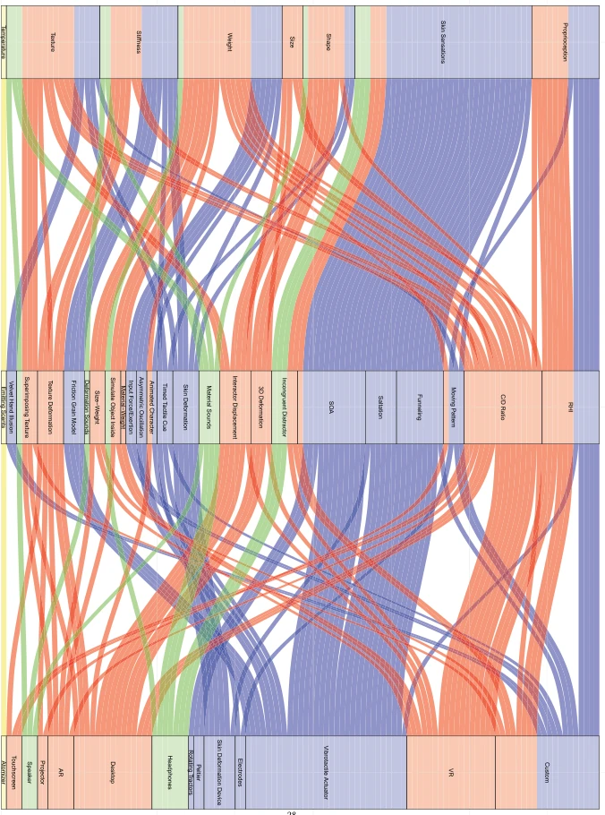

This paper is essentially a "hallucination" list, thoroughly cataloging the tricks in the HCI field that simulate touch by deceiving the brain. The authors did not invent new hardware, but conducted a systematic inventory of the "decoys" from the past few decades. The highlight lies in the interdisciplinary perspective, integrating perception psychology and HCI literature, pointing out which illusions are overused (e.g., Phantom Sensations) and which are gathering dust. The criticisms are also obvious: this field still relies too much on visual deception, and few "hard bones" of pure haptics are tackled, and many methods are far from real physics engines, belonging to "looks like it makes sense, feels like all air". However, as an introductory guide, it indeed saves a lot of literature search effort for those who want to do pseudo-haptics (Pseudo-haptics), counting as a qualified "pitfall avoidance guide". It reveals that existing research is overly concentrated on specific types of illusions, ignoring the potential of multisensory integration. For those who want to do embodied intelligent interaction, this report is both a map and a warning record.
Existing reviews are either outdated or focus only on a single domain (e.g., visual only or haptic only). Hayward [44]'s taxonomy ignores embodiment and body posture. Lederman and Jones [73]'s review is also from ten years ago. With MR technology development, new illusion methods have emerged, but no one has systematically organized them. This paper aims to fill this gap, answering which illusions are used in computing systems, which are underestimated, and the reasons behind. Especially the pseudo-haptics defined by Lécuyer [70] is too narrow, focusing only on visual influence, ignoring auditory or proprioception. With the popularization of Mixed Reality and high-fidelity rendering technologies, researchers need to know how to use these new tools to influence user perception more precisely. In addition, existing work lacks interdisciplinary integration, the gap between perception research and HCI needs to be bridged to discover untapped potential.

Fig. 3. Graphical representation of the distribution and relation of our codes regarding addressed senses. The sizes of the circles represent the number of instances of the senses. The intersections approximately represent the number of combinations of these senses. The numbers in the specific areas are the total numbers for how often senses were used by themselves or combined.
Adopted Systematic Literature Review (SLR), following PRISMA 2020 guidelines [99]. Searched ACM, IEEE, Multisensory Research. Keywords include haptic illusion, tactile illusion, etc. Screening process: deduplication, title/abstract screening, full-text screening. Finally 90 papers. Coding process: open coding, two rounds of iteration. The specific process is: first define research questions (RQ1-RQ4), then formulate search strategy, covering relevant literature of the past decade. Screening criteria are strict, must involve haptic perception, sensory illusion generation/modification, and effects verified by human subjects. Exclude pure theory or work without evaluation. After data collection, two researchers coded independently, discussed inconsistencies, finally forming classification dimensions. Classification based on target attributes (e.g., proprioception, weight, stiffness, etc.), involved senses (visual, auditory, etc.) and technical means. This method ensures the objectivity and comprehensiveness of results, avoiding bias of a single perspective.

Fig. 1. PRISMA flow diagram showing the stages of identification, screening, and inclusion of our systematic search. A description and explanation of exclusion criteria can be found in Section 3.3.
The dataset of this study is the 90 filtered papers. Baseline is existing perception research and HCI literature. Evaluation metrics mainly refer to user subjective reports or behavioral task performance in the original texts. Main results show, Phantom Sensations proportion is highest (26.67%), followed by Weight (18.89%) and Stiffness (14.44%). Visual is the most commonly used auxiliary sense. In terms of technology, VR/AR devices are used frequently. Evaluation mainly relies on user subjective reports or behavioral tasks. Research finds many works rely on visual control-display ratio (Control-display ratio) to simulate weight or stiffness, but pure haptic illusions are fewer. Weight illusion research increased after 2018.

Fig. 2. Number of publications included in our review by publication year. The linear trend line (red) shows the increased interest in this topic. The earliest publication fitting our criteria was published in 2004. Note that 2023 could only contain publications published before our final search date (June 5th, 2023 ).
其他图片Other Figures

Fig. 4. Alluvial diagram highlights the distribution and relationships between illusions, addressed senses, and used technologies we found in 90 included publications. The left side shows all investigated illusions categorized by the haptic property they are targeting. The center presents the senses that were utilized to elicit these illusions. On the right, the technologies used in their generation are listed.

Fig. 5. Number of haptic illusions explored and the technologies used in their creation, broken down by pub- lication year, shows how the research interest in different illusions and the used technologies have evolved over this period and how these factors may have influenced each other. Note that the colors in the upper and the lower bar charts are not directly related to each other. Top shows the distribution of illusions categorized by the haptic property they are targeting. Phantom Sensations comprise the biggest portion of researched illusions during the whole period. From 2018 onward, we see the proportion of investigated weight illusions increase. Bottom shows the distribution of technologies used to generate these illusions. The total number of technologies (97) exceeds the publica

Fig. 6. Alluvial diagram showing every illusion investigated in our surveyed publications characterized by four dimensions: Target Property, Method, Technology, and Sense. For a full explanation of this diagram, refer to Section 5.4.